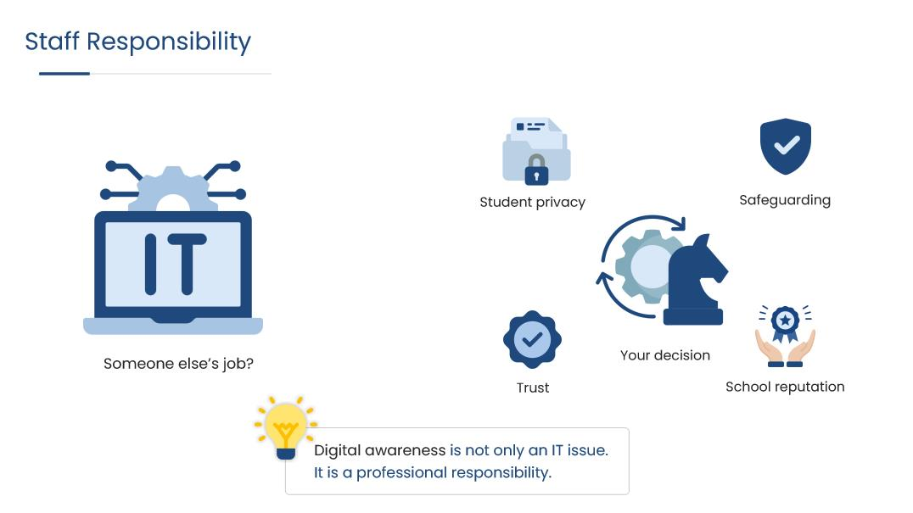

Digital Awareness in Education (Teachers & Staff)

Audience
Teachers and school support staff, adults who use school systems daily but rarely think of themselves as responsible for what those systems hold. This is module 1 of a 5 modules course.
The gap
Most staff already know the rules. What they don't do is apply them in the small moments where applying them is inconvenient: a colleague's laptop left unlocked with student records on screen, a student questioning why the rules apply to them and not to teachers. The belief underneath is that digital risk belongs to IT, that security is something the systems handle and staff are simply users of.
That belief is why this module comes first. Everything the later modules ask of staff: reporting procedures, judgment about resources, verification habits, assumes the learner already accepts that these decisions are theirs. A course that starts with procedure before establishing ownership is teaching steps to people who don't believe the task is theirs to do.
The approach
Module 1 is built around two recognisable staffroom moments rather than around rules. Each asks the learner what they would actually do, offers three defensible-sounding responses, and explains the reasoning behind each one rather than marking it right or wrong.
What success looked like
Success for this module meant a change in where staff locate the responsibility: a learner is expected to be able to name a situation as theirs to act on, not because a policy says so, but because they can see who is affected when nobody does. It also had to leave the learner with something the rest of the course could build on: four words for the standard: safely, responsibly, professionally, ethically, and one habit small enough to survive a busy day, which is to give it five seconds when something feels off, before acting or letting it pass.
Role
Instructional Designer, Content Developer
Tools
Articulate Storyline, PowerPoint, Canva
Timeline
5 Minutes
Audience
Teachers and school support staff
Design approach
Adult professionals have sat through a lot of compliance training, and most of it fails the same way: the correct answer is obvious on screen, so nothing is being practised. The module is built on the opposite premise, the two decision moments have three options that all sound reasonable, and the feedback explains why one holds up rather than announcing a winner.
Interactivity is deliberately lean, and that decision was made at course level rather than module level: one scenario plus a quick check per module, delivered mostly linearly, with no decorative click-to-reveals. At roughly five minutes a module, every interaction has to earn its place, and for this audience the thinking is the interaction. Setting that pattern in Module 1 is what lets the later modules be built quickly and feel like the same course.
Key decisions
Opinion framing, not answer framing. Decision prompts ask which response "best reflects your view" rather than which is correct, while the quick check asks for the "best answer." Two different instruction lines for two different kinds of question, used consistently across every module in the course.
"Look again" instead of "incorrect." Distractor feedback explains what the choice costs, who is exposed, what the silence communicates, and returns the learner to the question. Nothing is scored. This became the standard verdict language for the whole course.
Naming the belief directly. Rather than assuming staff already accept the premise, one slide puts "someone else's job?" on screen next to an IT icon, surrounded by what the decision actually touches: student privacy, safeguarding, trust, school reputation. Answering the objection is the job of Module 1 specifically; the later modules would not work if it went unaddressed.
A habit designed to travel. The five-second filter is introduced here with a fixed visual mark, a stopwatch in the course palette, so it can reappear in later modules without being reintroduced. Assets that recur across a course are worth designing once and locking.
Content boundaries. Slide content stays inside the current module's source material, with no forward references to topics a later module covers. It keeps each module self-contained and prevents the first one from becoming a summary of the whole course.
Challenges
The main one was audience resistance. Staff arrive at digital safety training expecting to be told things they already know, and that expectation is itself the obstacle. Making both scenarios genuinely arguable was the answer, the unlocked-laptop moment in particular divides a real staffroom, which is what makes it worth the screen time.
Storyboard
See the design plan behind this course, including screen-by-screen layout, narration, and interaction notes.
View storyboard (PDF) →